Behind the Scenes—Game Concept
As the project lead & solo designer, it was my task to come up with a game concept. At the start everybody's ideas were incorporated in a miro board. Subsequently, I did more research, developed meachnic ideas, etc. After another consultation with my group, we worked on prototypes. Finally, my prototype about moebius strips was chosen as our game project.
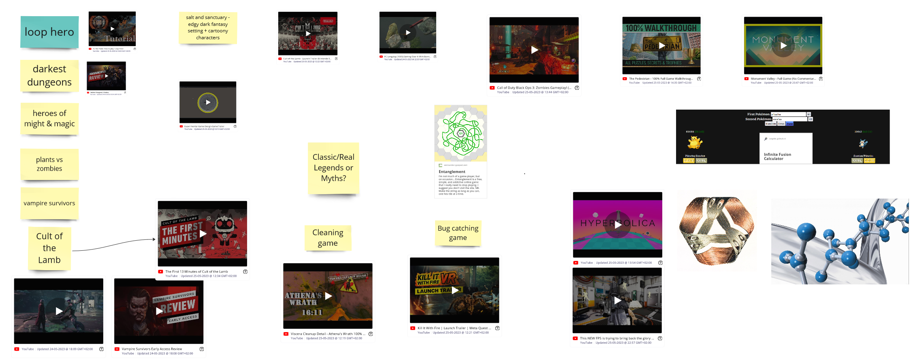
During the initial brainstorming session, all group suggestions were collected on a Miro board . I then conducted in-depth research on these ideas and related topics. For example, after watching a video about Möbius strips in my spare time, I added it to the game inspiration list the next day.
{kind=link}
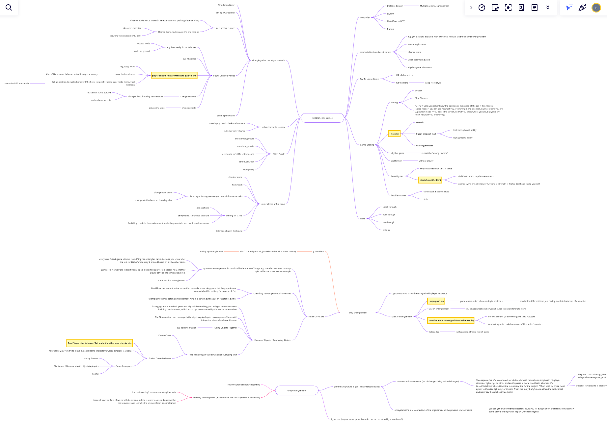
To structure the ideas I created a mind-map by the following rules:
Center: Topic (e.g. experimental or (dis)entanglement);
Depth 1: groupings of rough ideas (e.g. spatial entanglement).
Depth 2: specific game ideas (e.g. moebius strip).
Depth 3: specific mechanics.
The yellow-marked ideas are the ones I presented to the group.
{kind=link}
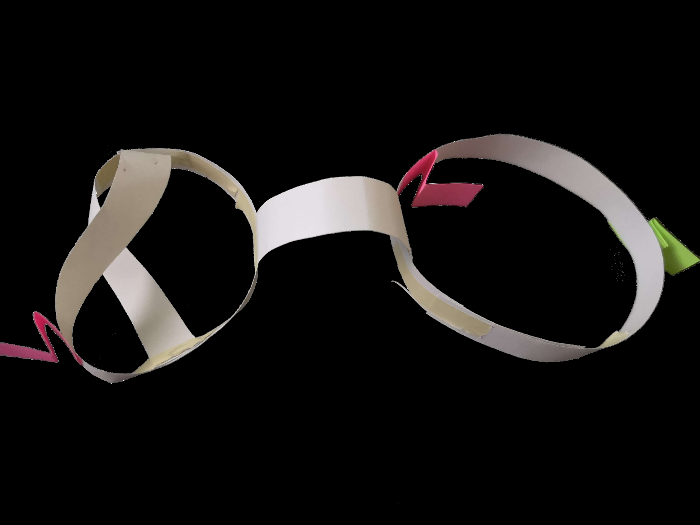
Three ideas from the mindmap were chosen to be prototyped: The real-time-reliant ones by the programmers, and the more puzzle-heavy by me as paper-prototypes. In the prototype shown here, the beholder has to find the shortest possible path that: 1. starts at the green mark, 2. only moves along the surface (never over an edge) and 3. has all red marks (later items) on it.
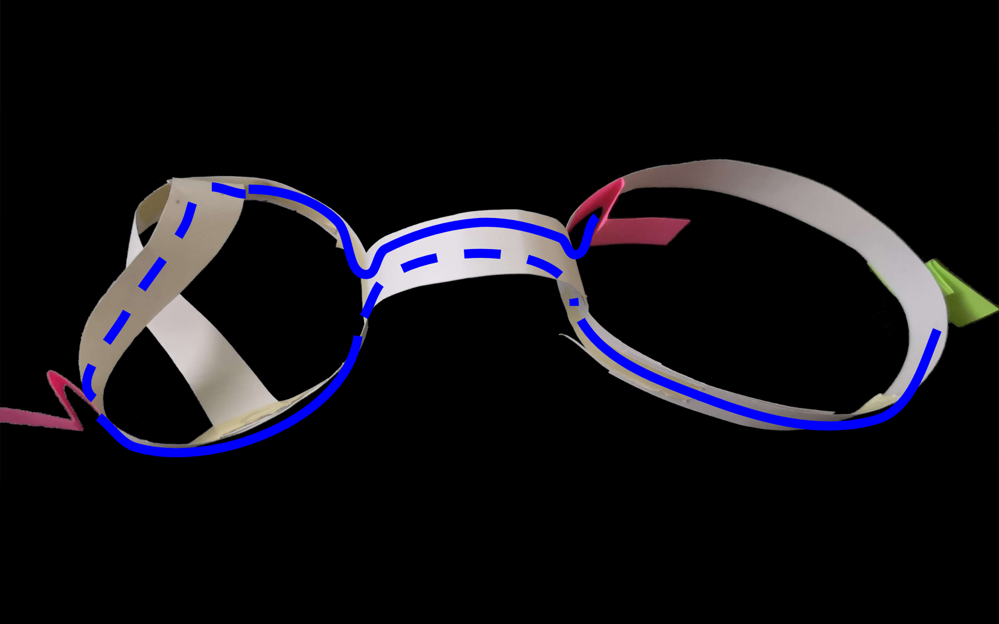
A possible solution path.
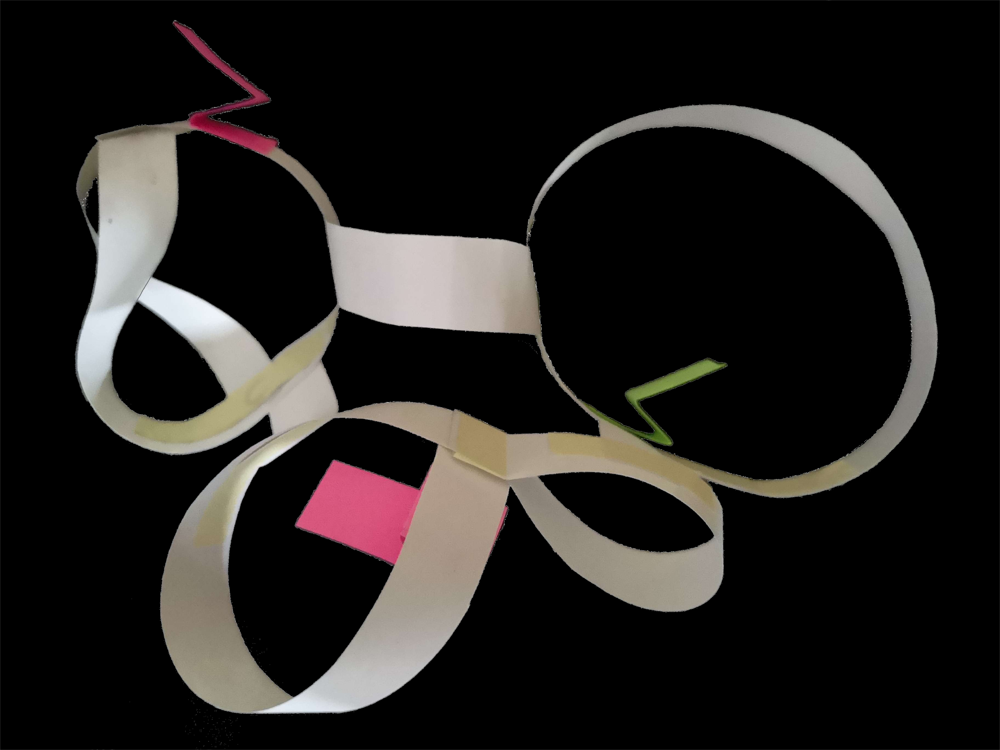
A more challenging prototype proved that the game offers a challenge.
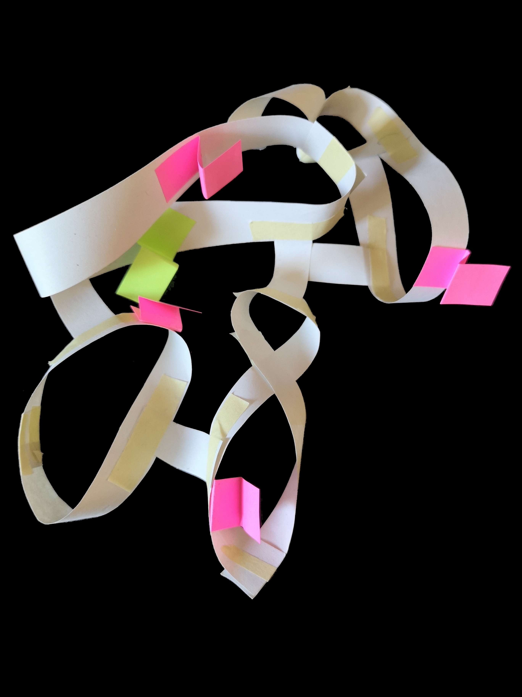
Since the paper prototype sparked the group's interest, we analyzed asset creation responsibilities of the project before finally commiting to the project.
Behind the Scenes—Game Design Document
Given the idea for the game, I had to figure out the detailed game mechanics. I started from a simple game loop, incorporated that into a larger context. Subsequently, I created flowcharts & in-engine blockout-timelines of individual game mechanics. The scroll-container below showcases the creation of the bridge-mechanic. The full Game Design Document can be found here .
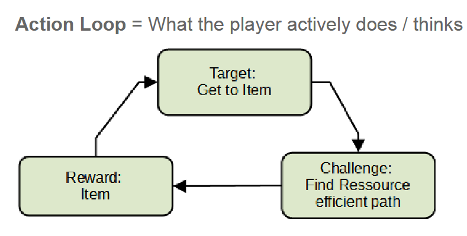
As a first step, I noted down the game loop at the center of the game.
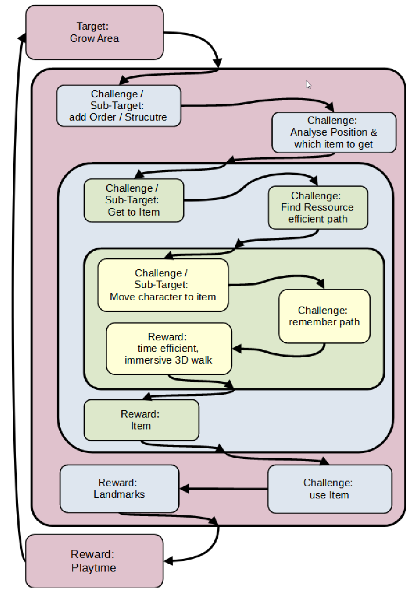
Going from there I figured out how the main action-loop fits into a larger context: There are small figures that automatically walk along the moebius strips. The player has to take control of them to make them take intersections. When the player has led one of the figures to a target location, they are rewarded with a new shape, that they can place themselves somewhere close to the current shapes. Subsequently one or multiple new target-locations spawn. This keeps the environment under the players' control while simultaneously increasing the difficulty.
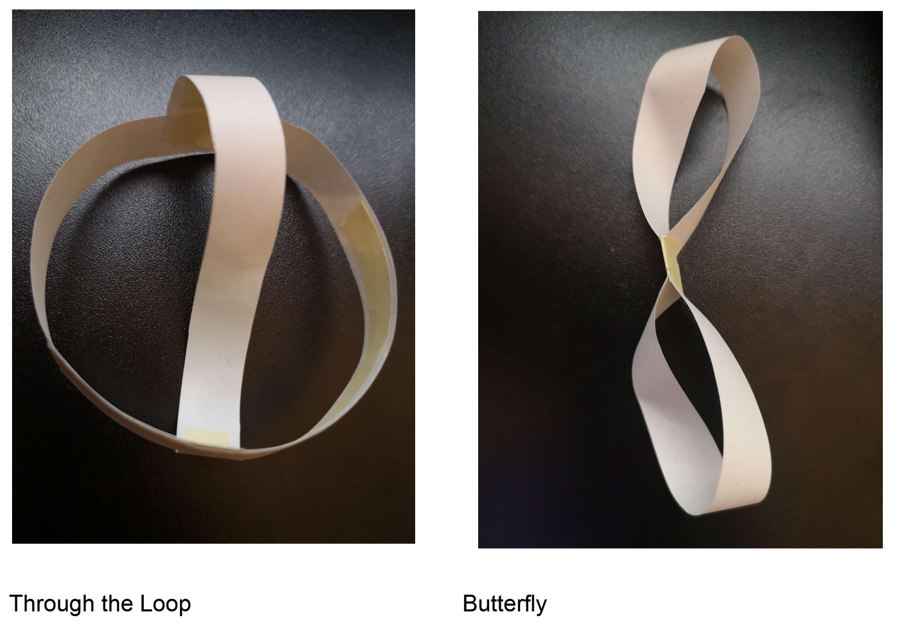
I figured out which shapes are interesting in terms of gameplay and visuals by building a multitude of paper prototypes. After choosing eight shapes, the paper strips also helped in providing a modeling reference for the artists.
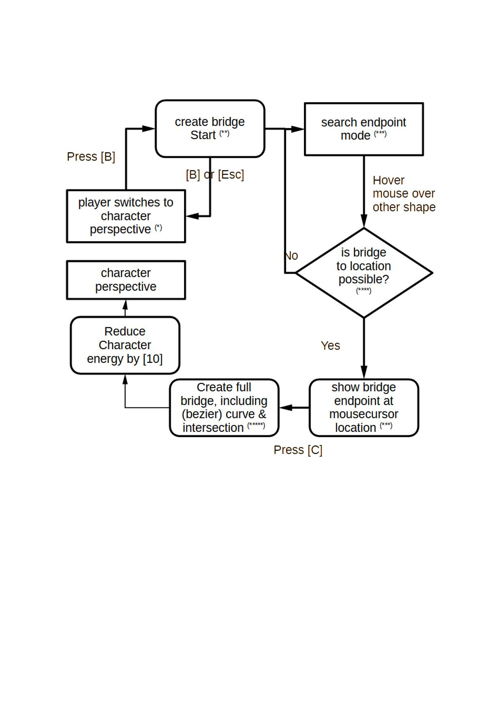
Since newly placed shapes are not immediately connected to the previous ones, the player has the ability to build bridges between them. The bridge-building follows some rules (e.g. costing energy depending on length), that I had to specify for the programmers to implement. Therefore, I created a flowchart of the process.
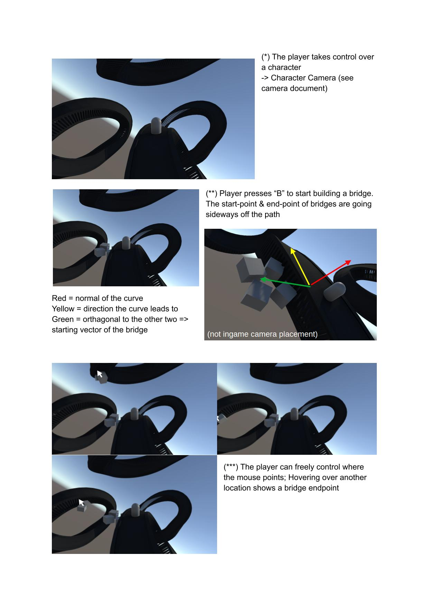
Accompanying the flowchart, I used placeholder assets in a unity-timeline to create a visualization of how the process should work.
Behind the Scenes—Sound
Disclaimer: I am not a professional in sound design, only a hobby musician. However, this skillset comes in useful in designing how the sound supports the gameplay & atmosphere and in implementing the sounds into the gameplay. This particular project did not have a dedicated sound-designer; thus, I took over the whole pipeline, from researching inspirations & instruments, to creating the soundscape and finally implementing a semi-procedural sound-system in via fmod in unity.
The music of the game had to incorporate the convoluted spatial nature of the moebius like shapes, while also being calm enough to be the looping background music of a puzzle game. As such, during my sound inspiration search I was happy to find videos like this one .
Based on the inspiration, I selected fitting instruments: Synths for serene, yet abstract continuous harmonies, enhanced by occasional ethereal winds. Hang-drums became the main melodic instruments due to their warm, slightly meditative sound, while a mixture of marimba and celeste added a high-pitched crystalline sound.
By using fmod, I created a semi-procedural soundscape that varies the harmonies continuously.
A sound-manager script in unity accesses fmod to play sounds depending on the players' actions and surrounding shapes.